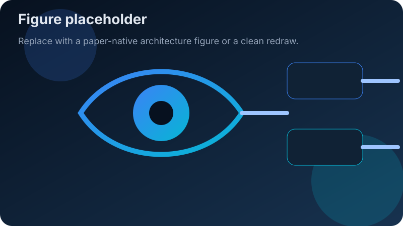

Living paper collection · continuously updated
A living hub for ophthalmic AI papers.
This site is built for paper sharing, not project marketing. It collects important ophthalmic AI papers, adds concise summaries, preserves original links, and reserves space for core model figures so readers can scan fast and go deeper when needed.
Last dataset refresh: —

What this site focuses on
Ophthalmic foundation models
The strongest current track for building a useful paper collection: landmark retinal and multimodal ophthalmic foundation model papers.
Visual grounding & region-text alignment
Papers on lesion localization, multimodal alignment, and related grounding-style ophthalmic or medically transferable work.
Parameter-efficient fine-tuning
LoRA, adapters, prompt tuning, efficient adaptation, and other practical ways to adapt large ophthalmic models with lower cost.
Hyperbolic methods
A smaller but interesting method-focused track, especially for hierarchy-aware disease representation and transferable modeling ideas.
Featured papers
Each entry aims to include a short takeaway, the original paper link, and eventually a core model figure or a clean redraw.